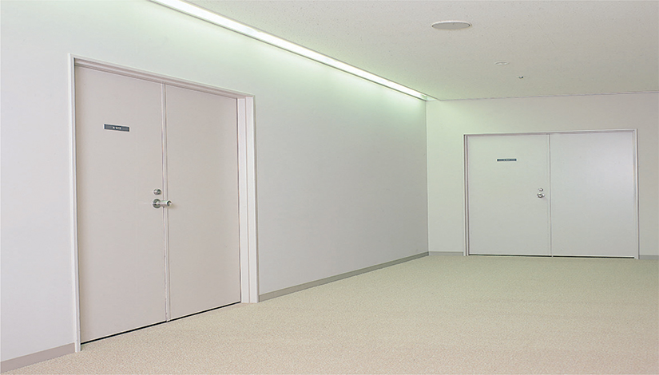

Cửa thép ngăn cháy ngày càng được sử dụng phổ biến trong các công trình xây dựng, giúp mang đến không gian sống đảm bảo và an toàn. Nếu được lắp đặt đúng cách, cửa thép ngăn cháy sẽ là giải pháp hữu hiệu và bền bỉ để đáp ứng nhu cầu về phòng chống cháy nổ trong các công trình xây dựng.
Cửa thép chống cháy EI60 là một trong những giải pháp quan trọng trong hệ thống PCCC (Phòng cháy chữa cháy) của các tòa nhà, cơ sở sản xuất, kinh doanh… EI60 là chỉ số về khả năng chịu lửa của cửa, nghĩa là cửa có thể ngăn cháy và khói trong ít nhất 60 phút khi xảy ra hỏa hoạn. Đây là yêu cầu tối thiểu theo tiêu chuẩn về PCCC ở nhiều quốc gia.
Cửa thép ngăn cháy EI60 được sản xuất từ thép chất lượng cao, có lớp cách nhiệt và kín khí đặc biệt, đảm bảo ngăn ngừa sự lan truyền của lửa, nhiệt và khói. Ngoài ra, cửa còn được trang bị các tính năng an toàn như: khoá tự động, thanh chắn khói, etc. Việc lắp đặt và bảo trì cửa thép chống cháy EI60 đúng cách là rất quan trọng để duy trì hiệu quả hoạt động của hệ thống PCCC.
Lưu ý: Việc lắp đặt phải tuân thủ đúng hướng dẫn của nhà sản xuất và các quy định về PCCC. Nên nhờ các đơn vị chuyên nghiệp về giải pháp chống cháy thực hiện để đảm bảo an toàn và hiệu quả.
Cửa thép ngăn cháy EI60 là một trong những “mắc xích” quan trọng của hệ thống PCCC, đóng vai trò then chốt trong việc ngăn chặn sự lan truyền của lửa và khói. Việc lắp đặt cửa chống cháy cẩn thận, đúng quy trình là điều kiện cần thiết để đảm bảo cửa hoạt động hiệu quả khi xảy ra sự cố hỏa hoạn. Bài viết trên đã cung cấp hướng dẫn chi tiết về các bước thực hiện, hi vọng sẽ hữu ích cho các bạn.